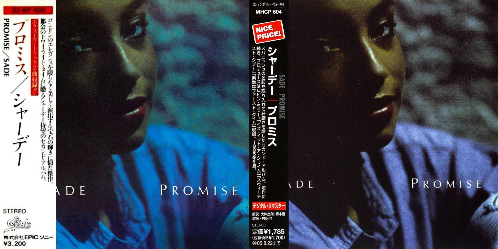
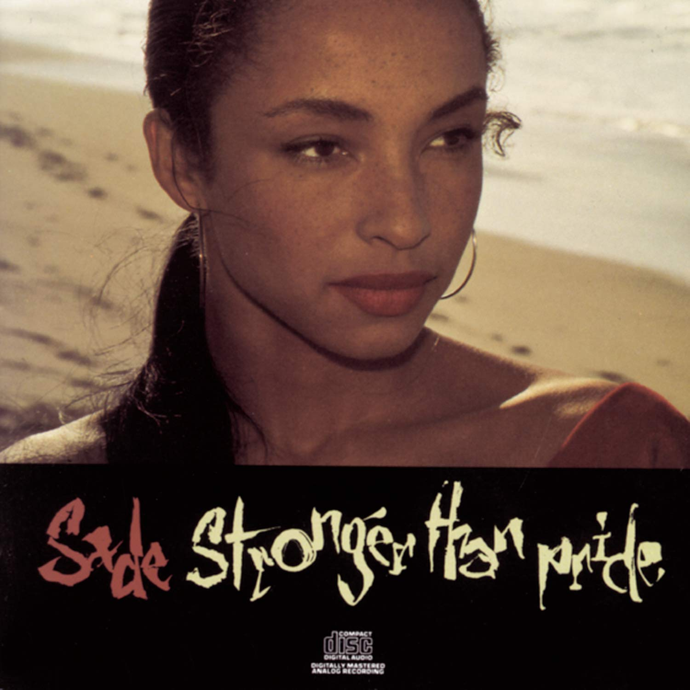
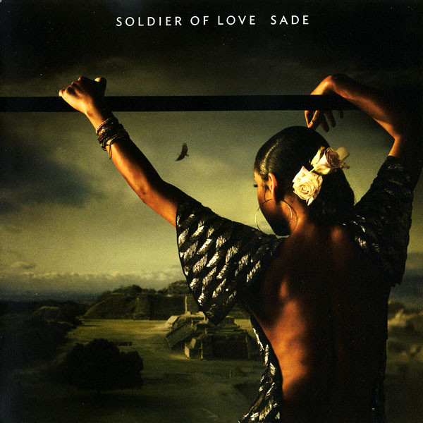

DISCOGRAPHY
Diamond Life (1984)
Recording for the album began in 1983 at Power Plant Studios in London and took a total of six weeks to complete. The album's content was written by the group Sade whilst the production was handled by Robin Millar. A total of 15 songs were recorded for the album with the use of live instruments that used sonically experimental material. The album contained a variety of musical elements including soul, jazz and sophisti-pop, with lyrics revolving mainly around themes of love.

Promise (1985)
Recording for the album began in February and lasted until August 1985. The band co-produced the album with the same team of producers they worked with on their debut album, Diamond Life, including Robin Millar, Mike Pela and Ben Rogan. The album's title comes from a letter from Adu's father where he refers to the "promise of hope" to recover from cancer.

Stronger Than Pride (1988)
Stronger Than Pride is the third studio album by English band Sade. It was released by Epic Records in the United States on 5 April 1988 and in the United Kingdom on 3 May 1988. In September 2018, Pitchfork placed the album at number 37 on its list of The 200 Best Albums of the 1980s.[6] The album spawned five singles.
Love Deluxe (1992)
Love Deluxe is the fourth studio album by English band Sade. It was released in the United States on 26 October 1992 and in the United Kingdom on 1 November 1992 by Epic Records.
Lovers Rock (2000)
The Lovers Rock Tour is the fifth concert tour by English band Sade. Predominately visiting amphitheaters in North America, the tour support the band's fifth studio album, Lovers Rock. Deemed by many critics as a comeback tour, it marks the band's first performances since 1994 and took place in 2001. Although many believed the trek would expand to other countries, this did not come to fruition. With over 40 shows, it became the 13th biggest tour in North America, earning over 26 million.

Soldier of Love (2010)
Soldier of Love is the sixth studio album by English band Sade. It was released on 5 February 2010 by Epic Records. Following the release of Lovers Rock (2000), the band went into a 10-year hiatus. In 2008, the band regrouped in order to begin work on their sixth album, making it the first time each member had been together. The recording of the album primarily took place at the Real World Studios in Box, England, with additional sessions at El Cortijo in San Pedro de Alcántara, Spain. The album's recording began in 2009 and was completed in the summer of that year.